作者：Kimi Team
https://github.com/MoonshotAI/Kimi-Linear
我们介绍 Kimi Linear，一种混合线性 attention 架构；在公平比较下，它首次在多种场景中超越了全 attention，包括短上下文、长上下文和强化学习（RL）扩展场景。其核心是 Kimi Delta Attention（KDA）：一个表达力强的线性 attention 模块，通过更细粒度的门控机制扩展 Gated DeltaNet [111]，从而更有效地利用有限的有限状态 RNN 记忆。我们专门设计的分块算法采用对角加低秩（Diagonal-Plus-Low-Rank，DPLR）转移矩阵的一种特化变体，获得了较高的硬件效率；相较于一般 DPLR 形式，该算法显著减少了计算，同时与经典 delta rule 更加一致。
我们预训练了一个激活参数量为 3B、总参数量为 48B 的 Kimi Linear 模型，其基础是 KDA 与 Multi-Head Latent Attention（MLA）的逐层混合。实验表明，使用完全相同的训练配方，Kimi Linear 在所有评测任务上均以显著优势超越全 MLA，同时将 KV cache 用量最多减少 75%，并在 1M 上下文下实现最高 6 倍的 decoding 吞吐量。这些结果表明，Kimi Linear 可以作为全 attention 架构的直接替代方案，具有更优的性能与效率，包括在输入与输出长度更长的任务上。
为支持进一步研究，我们开源 KDA kernel 和 vLLM 实现1，并发布预训练及指令微调模型 checkpoint。2
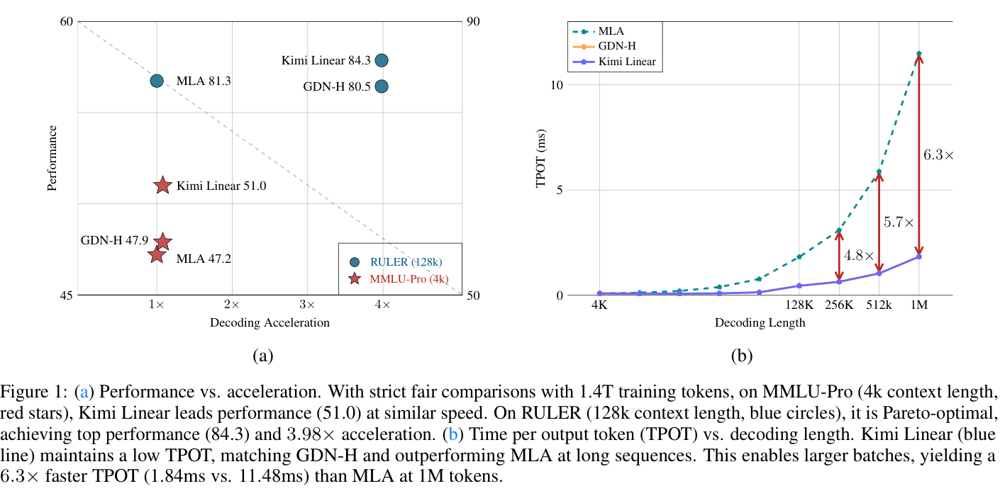
图 1：（a）性能与加速。在使用 1.4T 训练 token 的严格公平比较中，在 MMLU-Pro（4k 上下文长度，红色星形）上，Kimi Linear 在速度相近的情况下取得领先性能（51.0）。在 RULER（128k 上下文长度，蓝色圆形）上，它是帕累托最优的，取得最高性能（84.3）和 3.98 倍加速。（b）每个输出 token 的时间（TPOT）与 decoding 长度。Kimi Linear（蓝线）保持较低 TPOT，与 GDN-H 相当，并在长序列上超越 MLA。这使其能够使用更大的 batch，在 1M token 下，其 TPOT 比 MLA 快 6.3 倍（1.84ms 对 11.48ms）。
1 https://github.com/fla-org/flash-linear-attention/tree/main/fla/ops/kda
2 https://huggingface.co/moonshotai/Kimi-Linear-48B-A3B-Instruct
arXiv:2510.26692v2 [cs.CL] 2025 年 11 月 1 日
随着大语言模型（LLM）演变为能力日益增强的 agent [50]，推理的计算需求，尤其是在长时程与强化学习（RL）场景中，正成为核心瓶颈。这种转向 RL test-time scaling [95, 33, 80, 74, 53] 的趋势要求模型在推理时处理延长的轨迹、工具使用交互和复杂的决策空间，暴露了标准 attention 机制的根本低效性。具体来说，softmax attention 的二次时间复杂度与线性增长的键值（KV）cache 带来了显著的计算和内存开销，限制了吞吐量、上下文长度扩展以及实时交互。
线性 attention [48] 为降低计算复杂度提供了有理论依据的方法，但由于表达力有限，其语言建模表现历来逊于 softmax attention，即使在短序列上也是如此。近期进展显著缩小了这一差距，主要依赖两项创新：门控或衰减机制 [92, 16, 114]，以及 delta rule [84, 112, 111, 71]。这些发展共同推动线性 attention 在中等长度序列上接近 softmax 级别的质量。然而，纯线性结构仍从根本上受限于有限状态容量，使得长序列建模与上下文内检索在理论上具有挑战性 [104, 4, 45]。
因此，结合 softmax 与线性 attention 的混合架构成为质量与效率之间的实用折中：在主要由更快的线性层组成的模型中加入少量全局 attention 层 [57, 100, 66, 12, 32, 81]。但此前的混合模型往往规模有限，或缺少涵盖不同基准的全面评测。核心挑战依然是：开发一种 attention 架构，在质量上达到或超越全 attention，同时在速度与内存方面获得显著效率收益；这是实现下一代面向 agent、decoding 密集型 LLM 的关键一步。
本研究提出 Kimi Linear，这是一种混合线性 attention 架构，旨在满足 agent 智能与 test-time scaling 的效率需求，同时不牺牲质量。其核心是 Kimi Delta Attention（KDA），一种硬件高效的线性 attention 模块，通过更细粒度的门控机制扩展 Gated DeltaNet [111]。GDN 与 Mamba2 [16] 类似，采用粗粒度的逐头遗忘门；KDA 则引入逐通道变体，每个特征维度都维护独立的遗忘率，类似 Gated Linear Attention（GLA）[114]。这种细粒度设计允许更加精确地调节有限状态 RNN 记忆，从而释放混合架构中 RNN 风格模型的潜力。
关键在于，KDA 用对角加低秩（DPLR）矩阵 [30, 71] 的一种特化变体参数化其转移动力学，从而实现专门设计的分块并行算法；相对于一般 DPLR 形式，它显著减少计算，同时与经典 delta rule 保持一致。
Kimi Linear 按统一的 3:1 比例，将 KDA 与周期性出现的全 attention 层交错排列。这种混合结构在长序列生成中最多减少 75% 的内存和 KV cache 用量，同时通过全 attention 层保留全局信息流。通过规模匹配的预训练与评测，我们证明 Kimi Linear 在短上下文、长上下文与 RL 风格后训练任务中，始终达到或超越强大的全 attention 基线，同时在 1M 上下文长度下获得最高 6 倍的 decoding 吞吐量。
为促进进一步研究，我们发布与 vLLM 集成的开源 KDA kernel，以及预训练和指令微调 checkpoint。这些组件可直接兼容现有全 attention 流水线，无需修改 cache 或调度接口，从而便于开展混合架构研究。
本节介绍与我们提出的 Kimi Delta Attention 相关的技术背景。
本文定义 \(\square_t\in\mathbb R^{d_k}\) 或 \(\mathbb R^{d_v}\)，其中 \(\square\in\{q,k,v,o,u,w\}\) 表示相应的第 \(t\) 个列向量，而 \(S_t\in\mathbb R^{d_k\times d_v}\) 表示矩阵形式的记忆状态。\(M\) 和 \(M^-\) 分别表示包含和不包含对角元素的下三角掩码；为方便起见，我们也将其写作 Tril 和 StrictTril。
分块形式。假设序列被划分为 \(L/C\) 个块，每块长度为 \(C\)。定义 \(\square_{[t]}\in\mathbb R^{C\times d}\)，其中 \(\square\in\{Q,K,V,O,U,W\}\)，这些矩阵将第 \(t\) 个块内的向量堆叠起来，而 \(\square^r_{[t]}=\square_{tC+r}\) 是块内第 \(r\) 个元素。注意 \(t\in[0,L/C)\)，\(r\in[1,C]\)。状态矩阵也重新编号，使 \(S^i_{[t]}=S_{tC+i}\)。另外，\(S_{[t]}:=S^0_{[t]}=S^C_{[t-1]}\)，也就是说，一个块的初始状态是前一个块的最后状态。
衰减形式。定义累计衰减 \(\gamma^{i\to j}_{[t]}:=\prod_{k=i}^{j}\alpha^k_{[t]}\)，并将 \(\gamma^{1\to r}_{[t]}\) 简写为 \(\gamma^r_{[t]}\)。另外，\(A_{[t]}:=A^{i/j}_{[t]}\in\mathbb R^{C\times C}\) 是元素为 \(\gamma^i_{[t]}/\gamma^j_{[t]}\) 的矩阵。\(\operatorname{Diag}(\alpha_t)\) 表示细粒度衰减，\(\operatorname{Diag}(\gamma^{i\to j}_{[t]}):=\prod_{k=i}^{j}\operatorname{Diag}(\alpha^k_{[t]})\)，而 \(\Gamma^{i\to j}_{[t]}\in\mathbb R^{C\times d_k}\) 是将 \(\gamma^i_{[t]}\) 至 \(\gamma^j_{[t]}\) 堆叠得到的矩阵。
作为在线学习的线性 attention。线性 attention [48] 维护一个矩阵值循环状态，用于累积键值关联：
\[S_t=S_{t-1}+k_tv_t^\top,\qquad o_t=S_t^\top q_t.\]
从快速权重视角 [84, 85] 看，\(S_t\) 充当联想记忆，存储从键到值的临时映射。这一更新可以看作对无界相关性目标执行 gradient 下降：
\[\mathcal L_t(S)=-\langle S^\top k_t,v_t\rangle,\]
它持续强化近期的键值对，不进行任何遗忘。然而，这样的目标没有提供应擦除哪些记忆的标准，累积状态会无限增长，导致长上下文中的干扰。
DeltaNet：对重建损失进行在线 gradient 下降。DeltaNet [84] 将该递推重新解释为对重建目标进行在线 gradient 下降：
\[\mathcal L_t(S)=\frac12\|S^\top k_t-v_t\|^2.\]
以学习率 \(\beta_t\) 执行一步 gradient 更新，得到：
\[S_t=S_{t-1}-\beta_t\nabla_S\mathcal L_t(S_{t-1})=(I-\beta_tk_tk_t^\top)S_{t-1}+\beta_tk_tv_t^\top.\]
这个规则，即经典 delta rule，将 \(S\) 视为可学习的联想记忆，使其持续朝映射 \(k_t\mapsto v_t\) 自我修正。秩 1 更新结构等价于广义 Householder 变换，支持硬件高效的分块并行 [11, 112]。
作为权重衰减的 Gated DeltaNet。尽管 DeltaNet 稳定了学习，它仍无限期地保留过时关联。Gated DeltaNet（GDN）[111] 引入标量遗忘门 \(\alpha_t\in[0,1]\)，得到：
\[S_t=\alpha_t(I-\beta_tk_tk_t^\top)S_{t-1}+\beta_tk_tv_t^\top.\]
这里，\(\alpha_t\) 对快速权重起到某种权重衰减的作用 [8]，实现类似数据依赖的 \(L_2\) 正则化的遗忘机制。这一简单而有效的修改提供了控制记忆寿命、减轻干扰的有理论依据的方法，在保留 DeltaNet 可并行结构的同时，改善稳定性和长上下文泛化。
从这一视角，我们观察到 GDN 可以解释为一种乘法位置编码，其转移矩阵依赖数据且可学习，放宽了 RoPE [115] 的正交约束。3
3 当状态变换矩阵保持正交性时，也可以分别对 \(\mathbf{q}\) 与 \(\mathbf{k}\) 应用绝对位置编码，并在 attention 计算中将其转换为相对位置编码 [87]。
我们提出 Kimi Delta Attention（KDA），一种新的 gated 线性 attention 变体，通过引入细粒度对角化门 \(\operatorname{Diag}(\alpha_t)\)，细化 GDN 的标量衰减，从而细粒度地控制记忆衰减与位置感知（见 §6.1）。我们首先介绍 KDA 的分块并行，展示如何将一系列秩 1 矩阵变换压缩为稠密表示，同时在对角门控下保持稳定。随后我们重点说明 KDA 相对于标准 DPLR（对角加低秩）形式 [30, 71] 的效率收益。
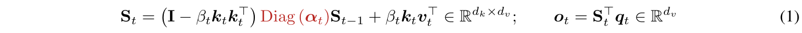
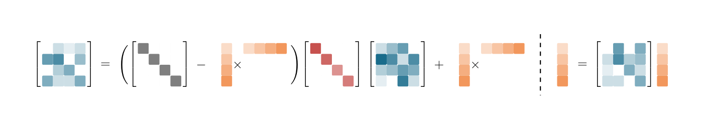
将式 1 的递推部分展开为分块形式，得到：
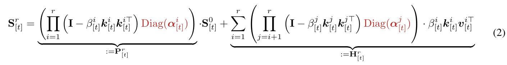
WY 表示。通常使用 WY 表示将一系列秩 1 更新打包为单个紧凑表示 [11]。我们沿用 Comba [40] 中 P 的形式，以减少后续计算所需的额外矩阵求逆。
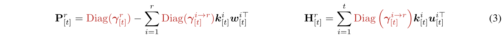
其中，辅助向量 \(w_t\in\mathbb R^{d_k}\) 和 \(u_t\in\mathbb R^{d_v}\) 通过以下递推关系计算：
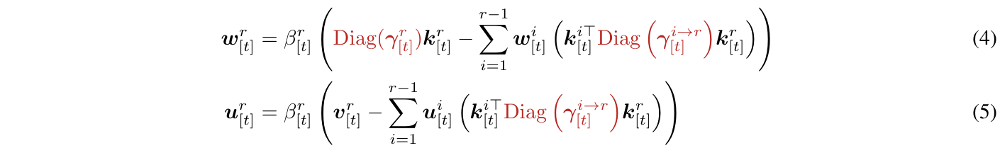
UT 变换。我们使用 UT 变换 [46] 来减少非矩阵乘 FLOPs，这对训练期间实现更好的硬件利用率至关重要。
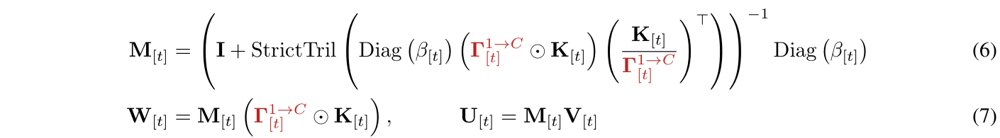
下三角矩阵的逆可以通过高斯消元中的前向替代 [28]，采用迭代的逐行方法高效计算。
等价地，在矩阵形式下，我们可以按块更新状态：
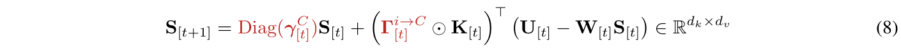
在输出阶段，我们采用块间循环、块内并行的策略，最大化矩阵乘法吞吐量，从而充分利用 Tensor Core 的计算潜力。
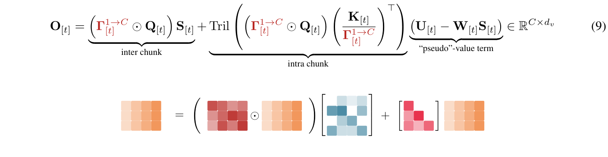
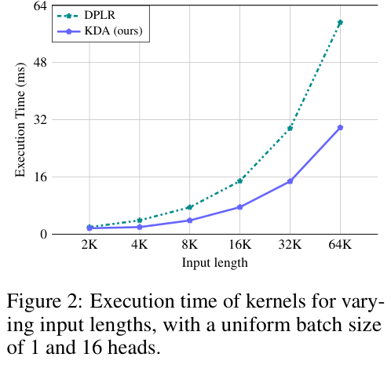
图 2：不同输入长度下 kernel 的执行时间，统一使用 batch 大小 1 和 16 个头。
就表示能力而言，KDA 与广义 DPLR 形式一致，即 \(S_t=(D-a_tb_t^\top)S_{t-1}+k_tv_t^\top\)，两者都表现出细粒度衰减行为。然而，这种细粒度衰减会在除法运算期间引入数值精度问题（例如式 9 的块内计算）。为解决这一问题，GLA [114] 等先前工作在对数域中执行计算，并引入全精度的二级分块。但是，这种方法无法充分利用半精度矩阵乘法，显著降低算子速度。通过将变量 a 与 b 都绑定到 k，KDA 有效缓解了这一瓶颈：将二级块矩阵计算次数从四次减少至两次，并进一步消除三个额外的矩阵乘法。因此，相比 DPLR 形式，KDA 的算子效率提高约 100%。详细分析见 §6.2。
模型架构的主要骨干沿用 Moonlight [62]。除细粒度门控外，我们还利用若干组件进一步提高 Kimi Linear 的表达力。Kimi Linear 的整体架构如图 3 所示。
神经网络参数化。设 \(x_t\in\mathbb R^d\) 为第 \(t\) 个 token 的输入表示，每个头 \(h\) 的 KDA 输入计算如下：
其中，\(d_k,d_v\) 表示键头和值头的维度，所有实验均设为 128。对 q、k、v，遵循 [111]，先应用 ShortConv，再应用 Swish 激活。根据 [112] 的建议，使用 L2Norm 进一步归一化 q 和 k 表示，以确保特征值稳定。逐通道衰减 \(\alpha_t^h\) 通过低秩投影（\(W_\alpha^\downarrow\) 和 \(W_\alpha^\uparrow\)，秩等于头维度）与衰减函数 \(f(\cdot)\) 参数化，该函数类似于（接下页）
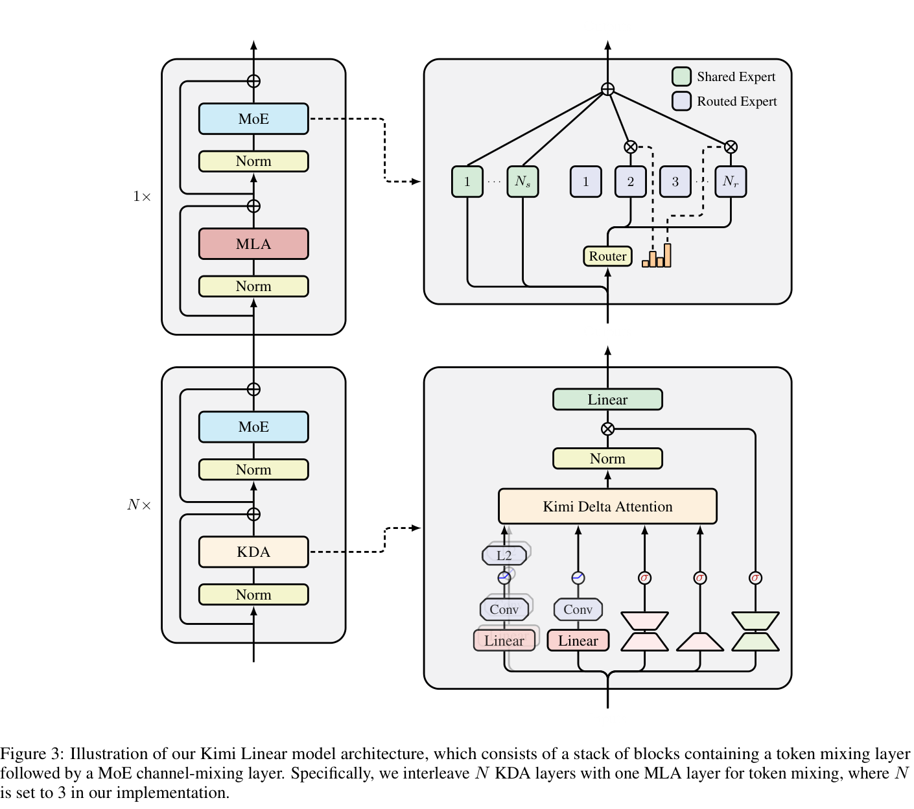
图 3：Kimi Linear 模型架构示意图。模型由一系列块堆叠构成，每个块包含一个 token 混合层，之后是一个 MoE 通道混合层。具体来说，用于 token 混合的 N 个 KDA 层与一个 MLA 层交错排列；在我们的实现中，N 设为 3。
（接上页）GDN 与 Mamba [111, 16] 所使用的衰减函数。在通过 \(W_o\in\mathbb R^{d\times d}\) 进行输出投影之前，我们采用逐头 RMSNorm [122] 与依赖数据的门控机制 [79]，参数化如下：
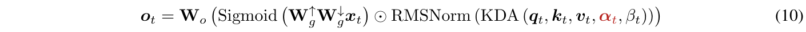
这里，输出门采用与遗忘门类似的低秩参数化，以确保参数比较公平，同时保持与全秩门控相当的性能，并缓解 attention sink [79]。非线性激活函数的选择将在 §5.2 中进一步讨论。
混合模型架构。长上下文检索仍然是纯线性 attention 的主要瓶颈，因此我们将 KDA 与少量完整全局 attention（全 MLA）层 [19] 混合。对于 Kimi Linear，我们选择逐层方式（整个层交替排列），而非逐头方式（在层内混合不同头），因为其基础设施更简单，训练更稳定。实证上，统一的 3:1 比例，即重复 3 个 KDA 层接 1 个全 MLA 层，提供了最佳质量与吞吐量折中。其他混合策略见 §7.2。
MLA 层的无位置编码（NoPE）。在 Kimi Linear 中，我们对所有全 attention（MLA）层使用 NoPE。这个设计将编码位置信息与近因偏置（见 §6.1）的全部责任交给 KDA 层。因此，KDA 成为主要的位置感知算子，发挥类似于、甚至可以说强于短卷积 [3] 或 SWA [76] 等辅助组件的作用。我们的发现与先前结果 [110, 7, 19] 一致：这些工作同样表明，为全局 NoPE attention 配备专门的位置感知机制，可以获得具有竞争力的长上下文表现。
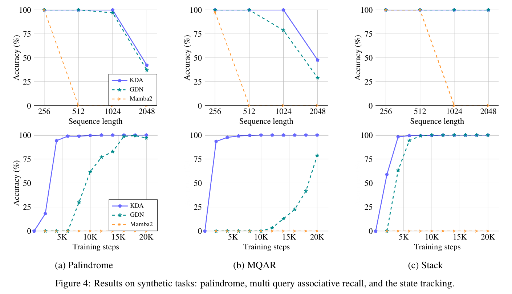
图 4：合成任务结果：回文、多查询联想回忆和状态跟踪。
我们注意到，NoPE 在实际使用中具有优势，对 MLA 尤其如此。首先，NoPE 允许在推理期间将其转化为高效的纯 Multi-Query Attention（MQA）。其次，它简化了长上下文训练，因为不再需要调整 RoPE 参数，例如调节频率基数，或采用 YaRN [72] 等方法。
首先，我们在三个合成任务上将 KDA 与其他具有竞争力的线性 attention 方法比较，作为长上下文表现的基准测试。所有实验均采用统一的模型配置：2 层、2 个 attention 头，每个头维度 128。对每个任务，模型最多训练 20,000 步，学习率在 \(\{5\times10^{-5},1\times10^{-4},5\times10^{-4},1\times10^{-3}\}\) 中进行网格搜索。然后展示表现最佳的训练准确率曲线。具体比较两种场景：（1）训练长度从 256 增至 2,048 token 时不同任务的表现，以峰值准确率衡量；（2）在固定 1,024 token 上下文长度下 KDA、GDN 与 Mamba2 的收敛速度。
回文。回文要求模型将给定的随机 token 序列按逆序复现。如表 5.1 所示，给定“O G R S U N E”这样的输入，模型必须生成其精确逆序。众所周知，这种复制任务对线性 attention 模型很难 [45]，因为它们难以从压缩后的固定大小记忆状态中精确检索完整历史。
多查询联想回忆（MQAR）。MQAR 评估模型检索与多个查询相关联的值的能力，这些查询出现在上下文的不同位置。例如，如表 5.1 所示，要求模型对查询 B 回忆 0，对 G 回忆 5。已知此任务与语言建模表现高度相关 [5]。
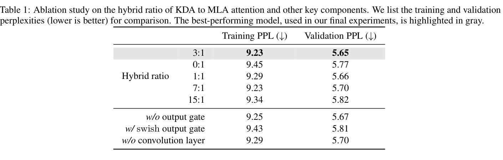
表 1：KDA 与 MLA attention 混合比例及其他关键组件的消融研究。列出训练和验证困惑度（越低越好）进行比较。最终实验使用的最佳模型以灰色突出显示。
栈。我们通过模拟标准 LIFO（后进先出）栈操作，评估每种候选方法的状态跟踪能力 [27]。设置包含 64 个独立栈，每个栈以唯一 ID 标识。模型处理由两种操作组成的序列：1）PUSH：例如“<push> 1 G”这样的操作，将元素 G 添加到栈 1；2）POP：例如“<pop> 0 E”这样的操作，要求模型预测最近压入栈 0 的元素 E。目标是准确跟踪所有栈的状态，并在每次弹出请求时预测正确元素。
图 4 展示最终结果。所有任务中，随着序列长度从 256 增至 2,048 token，KDA 始终取得最高准确率。尤其在回文以及回忆密集型 MQAR 任务上，KDA 比 GDN 收敛显著更快。这验证了细粒度衰减的收益：模型可以选择性遗忘无关信息，同时更精确地保留关键记忆。我们还观察到，在本研究的模型设置中，Mamba2 [16] 这种仅使用乘法衰减、不含 delta rule 的典型线性 attention 在所有任务上均失败。
我们将不同模型直接与 scaling law 模型的第一个规模，即 16 个头、16 层的模型比较，进行了一系列消融研究。所有模型使用相同 FLOPs 预算和超参数训练，确保比较公平。表 1 报告训练和验证困惑度（PPL）。验证 PPL 在高质量数据集上计算，其分布与预训练语料显著不同，强调分布偏移下的泛化；因此，训练和验证困惑度存在差异。
输出门。我们将默认 Sigmoid 输出门与两个变体比较：不采用门控，以及采用 swish 门控。结果表明，去掉门会降低性能。此外，[111] 采用的 swish 门明显逊于 Sigmoid。我们的观察与 [79] 一致，该研究同样认为 Sigmoid 门控表现更好。因此，所有实验均采用 Sigmoid，包括 GDN-H。
卷积层。kernel 大小较小（例如 4）的轻量深度卷积可以有效捕获局部 token 依赖 [3]，被许多近期架构广泛采用 [16, 5, 112]。我们在表 1 中验证了其有效性，证明卷积层在混合模型中仍发挥不可忽视的作用。
混合比例。我们通过消融研究确定 KDA 线性 attention 层与 MLA 全 attention 层的最佳混合比例。在测试配置中，3:1 比例（每 1 个 MLA 层对应 3 个 KDA 层）取得最佳结果，训练和验证损失均最低。其他比例存在清晰的折中：更高比例（例如 7:1）的训练损失相当，但验证表现显著变差；更低比例（例如 1:1）保持相近验证损失，却增加推理开销。此外，纯全 attention 基线（0:1）表现较差。因此，3:1 配置在模型性能与计算效率间提供最有效的平衡。
NoPE 与 RoPE。如表 5 所示，Kimi Linear 在长上下文评测中始终表现突出，而 Kimi Linear（RoPE）在短上下文任务上取得相近分数。我们认为这种差异来自位置偏置沿网络深度的分布方式。在 Kimi Linear（RoPE）中，全局 attention 层携带强烈、显式的相对位置信号，而线性 attention（例如 GDN）贡献较弱、隐式的位置归纳偏置。这种不匹配使全局层过度强调短距离顺序，虽有利于短上下文，却使模型在训练中途适应扩展上下文时缺乏灵活性。相比之下，Kimi Linear 形成更加（接下页）
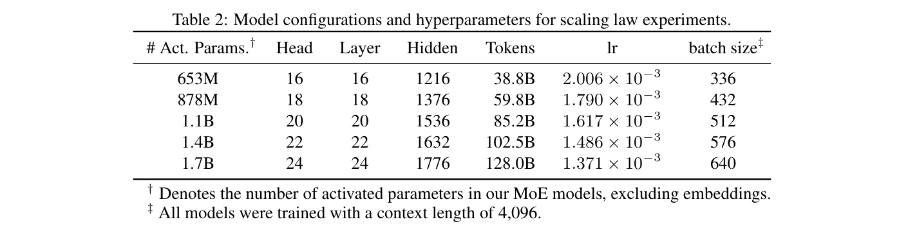
表 2：scaling law 实验的模型配置与超参数。† 表示 MoE 模型中激活参数的数量，不含 embeddings。‡ 所有模型均以 4,096 的上下文长度训练。
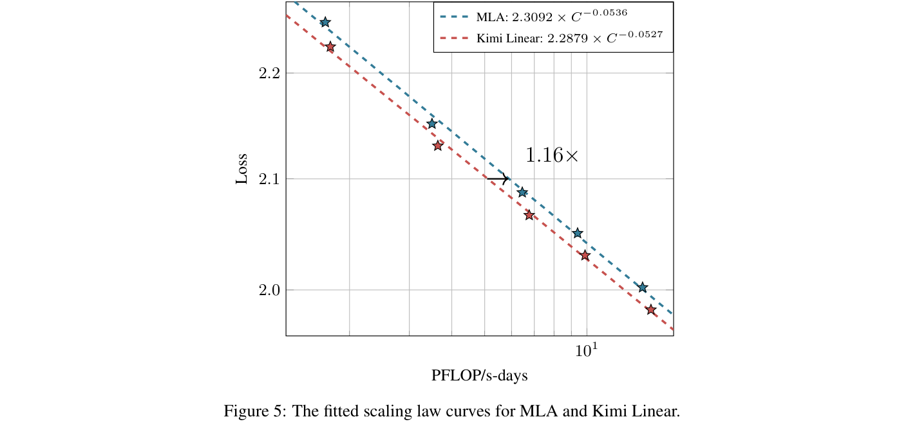
图 5：MLA 与 Kimi Linear 拟合的 scaling law 曲线。
（接上页）均衡的跨层位置偏置，改善远距离下的鲁棒性与外推，带来更强的长上下文表现。对于长上下文表现，如表 5 所示，Kimi Linear 在不同长上下文基准上获得最佳平均分，验证了上一节所述收益。
我们在一系列遵循 Moonlight [62] 架构的 MoE 模型上开展 scaling law 实验。所有实验均在 64 个专家中激活 8 个，采用 Muon 优化器 [62]。详情与超参数见表 2。
对于 MLA，遵循 Chinchilla scaling law 方法 [37]，训练五个不同大小的语言模型，通过网格搜索仔细调节超参数，以确保每个模型取得最佳性能。对于 KDA，保持表 1 消融得出的最佳混合比例 3:1。除此之外，严格沿用 MLA 的训练配置，不做任何修改。如图 5 所示，在计算最优训练下，Kimi Linear 相较 MLA 基线取得约 1.16 倍的计算效率。我们预计仔细调节超参数会为 KDA 带来更优的扩展曲线。
Kimi Linear 与基线设置。我们将 Kimi Linear 模型与全 attention MLA 基线和混合 Gated DeltaNet（GDN-H）基线比较；为公平比较，它们均具有相同架构、参数量和训练设置。模型配置主要与 Moonlight [62] 一致，关键区别是 MoE 稀疏度提高到 32。每个模型在 256 个专家中激活 8 个，包括一个共享专家，总参数量为 480 亿，每次前向传播激活参数量为 30 亿。第一层实现为不含 MoE 的稠密层，以确保训练稳定。为评估 NoPE 在 Kimi Linear 中的有效性，我们还引入采用 RoPE、模型配置相同的混合 KDA 基线，称为 Kimi Linear（RoPE）。
评测基准。我们的评测涵盖三大类基准，每类旨在评估模型的不同能力：
评测配置。所有模型均使用 temperature 1.0 评测。对于方差较高的基准，报告 Avg@k 分数。基础模型在 MMLU、MMLU-Redux、GPQA-Diamond 和 C-Eval 上使用基于困惑度的评测；其他情况使用基于生成的评测。为减轻 GPQA-Diamond 固有的高方差，我们报告八次独立运行的平均分。所有评测均使用源自 LM-Harness-Evaluation [10] 的内部框架，确保各模型设置一致。
预训练配方。所有模型均使用 4,096 token 上下文窗口、MuonClip 优化器和 WSD 学习率调度预训练，处理从 K2 预训练语料 [50] 中采样、共同使用的总计 1.4 万亿 token。学习率设为 \(1.1\times10^{-3}\)，全局 batch 大小固定为 3,200 万 token。它们还采用 Kimi K2 [50] 建立的相同退火调度和长上下文激活阶段。
最终发布的 Kimi Linear checkpoint 使用相同步骤预训练，但总 token 数扩展为 5.7 万亿，以匹配 Moonlight 的预训练 token 数。此外，最终 checkpoint 支持最高 100 万 token 的上下文长度。附录 D 比较 Kimi Linear@5.7T 与 Moonlight 的表现。
SFT 配方。SFT 数据集在 Kimi K2 [50] SFT 数据基础上加入额外推理任务，形成覆盖多个领域、重点强调数学与编码的大规模指令微调数据集。我们采用多阶段 SFT：首先使用广泛多样的 SFT 数据训练通用指令遵循，然后按计划针对推理密集型数据训练，以增强模型推理能力。
RL 配方。对于 RL 训练提示集，主要整合数学、代码和 STEM 三类数据。这一增强的主要目的是提升模型推理能力。进行 RL 前，预先筛选与起始 checkpoint 相匹配、难度适中的数据。
RL 训练的一个已知风险是通用能力可能退化。为缓解此问题，遵循 K2 [50] 的实践，在 RL 中引入 PTX 损失 [70]。这意味着在 RL 过程中，同时在高质量、分布多样的数据集上进行 SFT。PTX 数据集涵盖推理和通用任务。上述所有数据均为 K2 模型 [50] 训练配方所衍生的子集。
RL 算法使用与 K1.5 [95] 相同的算法，同时引入若干高级技巧。我们发现训练与推理引擎之间的精度不匹配可能导致 RL 学习不稳定。因此，引入截断重要性采样，有效缓解 rollout 与训练之间的策略不匹配 [116]。我们还动态调整 KL 惩罚和 mini-batch 大小（即每轮迭代的更新次数），以稳定 RL 训练，避免熵坍塌 [15]。
预训练结果。表 3 中，我们使用 1.4T 预训练语料，将 Kimi Linear 模型与两个基线（MLA 和混合 GDN-H）比较。评测重点关注通用知识、推理（数学与代码）和中文任务三个方面。Kimi Linear 在几乎所有类别上始终超越两个基线。
4 2024 年 8 月至 2025 年 5 月的题目。
5 https://huggingface.co/datasets/openai/mrcr
总而言之，Kimi Linear 展示了最强性能，使其成为短上下文预训练中全 attention 架构的强有力替代方案。
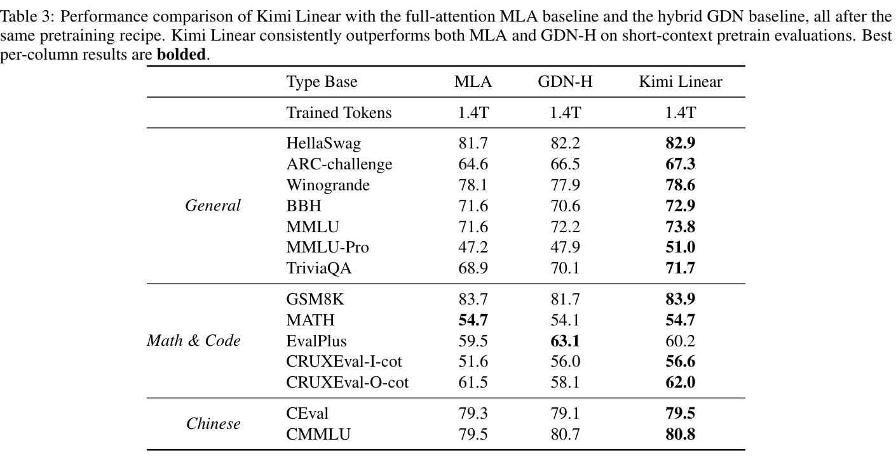
表 3：Kimi Linear 与全 attention MLA 基线及混合 GDN 基线的性能比较，所有模型均使用相同预训练配方。Kimi Linear 在短上下文预训练评测中始终超越 MLA 与 GDN-H。每列最佳结果以粗体显示。
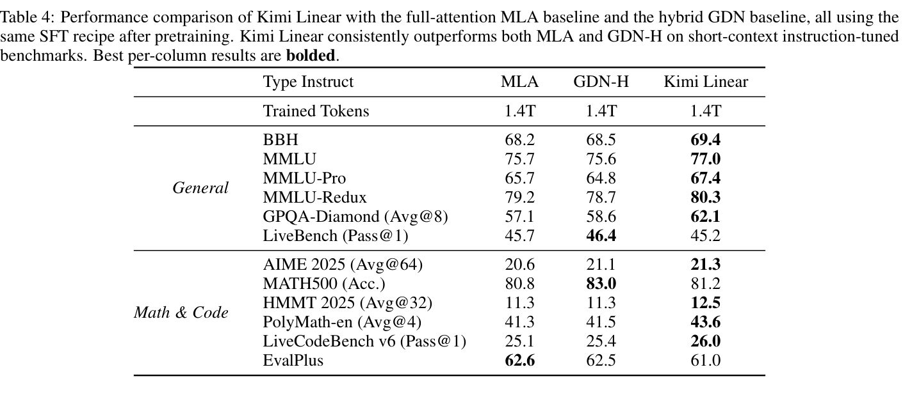
表 4：Kimi Linear 与全 attention MLA 基线及混合 GDN 基线的性能比较，所有模型在预训练后均使用相同 SFT 配方。Kimi Linear 在短上下文指令微调基准上始终超越 MLA 与 GDN-H。每列最佳结果以粗体显示。
SFT 结果。使用相同的监督微调（SFT）配方后，Kimi Linear 在通用以及数学与代码任务上表现出强大性能，始终超越 MLA 和 GDN-H。在通用任务上，Kimi Linear 全面领先，在各种 MMLU 基准、BBH 和 GPQA-Diamond 上获得最高分。在数学与代码任务上，它在 AIME 2025、HMMT 2025、PolyMath-en 和 LiveCodeBench 等困难基准上超越两个基线。尽管 MATH500 和 EvalPlus 等存在少量例外，Kimi Linear 在各任务中表现出稳健优势，证实其明显优于被测试的其他模型（GDN-H 和 MLA）。
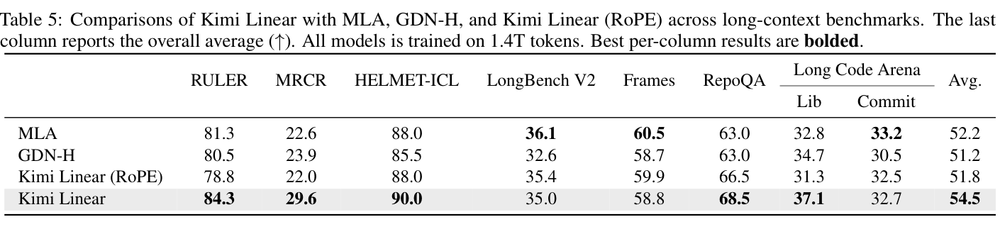
表 5：Kimi Linear 与 MLA、GDN-H 和 Kimi Linear（RoPE）在长上下文基准上的比较。最后一列报告总体平均分（↑）。所有模型均使用 1.4T token 训练。每列最佳结果以粗体显示。
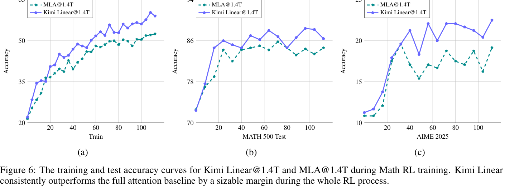
图 6：数学 RL 训练期间，Kimi Linear@1.4T 和 MLA@1.4T 的训练及测试准确率曲线。在整个 RL 过程中，Kimi Linear 始终以显著优势超越全 attention 基线。
长上下文性能评测。我们在 128k 上下文长度的多个基准上，将 Kimi Linear 与 MLA、GDN-H 和 Kimi Linear（RoPE）三个基线模型比较（见表 5）。结果突出显示 Kimi Linear 在这些长上下文任务中的明显优势。它始终超越 MLA 和 GDN-H，在 RULER（84.3）和 RepoQA（68.5）上以显著优势取得最高分。这种领先趋势在多数其他任务上保持，LongBench V2 和 Frames 除外。总体而言，Kimi Linear 取得最高平均分（54.5），进一步确认它作为长上下文场景中领先 attention 架构的有效性。
RL 结果。为比较 Kimi Linear 与 MLA 的 RL 收敛特性，我们使用 [50] 的内部数学训练集开展 RLVR，并在数学测试集（例如 AIME 2025、MATH500）上评测，保持算法与全部超参数一致，以确保性能比较公平。
如图 6 所示，Kimi Linear 相较 MLA 表现出更高效率。在训练集上，虽然两个模型起点相近，但 Kimi Linear 的训练准确率增长率显著高于 MLA，且差距逐渐扩大。测试集上也观察到相似现象。例如在 MATH500 和 AIME2025 上，Kimi Linear 相比 MLA 提升更快、更好。总体而言，在 RL 中推理密集的长文本生成任务上，我们实证观察到 Kimi Linear 表现显著优于 MLA。
总体发现总结。在预训练和 SFT 阶段，形成了清晰的性能层级：Kimi Linear 优于 GDN-H，后者又优于 MLA。但这一层级在长上下文评测中发生变化。Kimi Linear 保持领先位置，而 GDN-H 表现下降，落后于 MLA。此外，RL 阶段 Kimi Linear 也表现优于 MLA。总体而言，Kimi Linear 在所有阶段始终位居第一，确立了它作为全 attention 架构的优越替代方案的地位。
prefill 与 decoding 速度。图 7a 和图 7b 比较全 attention MLA [19]、GDN-H 和 Kimi Linear 的训练及 decoding 时间。注意所有模型均基于 Kimi Linear 48B 设置，层数与 attention 头数相同。我们观察到：1）尽管引入更细粒度衰减机制，在 prefill 期间，Kimi Linear 相较 GDN-H 带来的延迟开销可以忽略。如图 7a 所示，两者的（接下页）
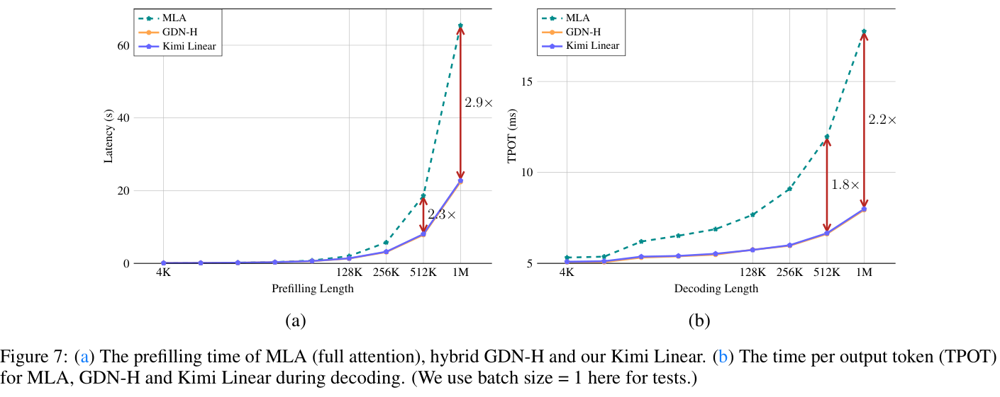
图 7：（a）MLA（全 attention）、混合 GDN-H 与 Kimi Linear 的 prefill 时间。（b）MLA、GDN-H 和 Kimi Linear 在 decoding 期间的每个输出 token 时间（TPOT）。（这里的测试使用 batch 大小 1。）
（接上页）性能曲线几乎无法区分，证实本方法保持高效率。随着序列长度增加，混合 Kimi Linear 模型相较 MLA 基线展现出明显效率优势。较短长度（4k–16k）下表现与 MLA 相当，但从 128k 开始明显更快。规模扩大时，这一效率差距急剧增加：对于 512k 和 1M 序列，Kimi Linear 分别比 MLA 快 2.3 倍和 2.9 倍。如图 1b 所示，Kimi Linear 在 decoding 阶段充分体现优势。在 1M 上下文长度下 decoding 时，Kimi Linear 比全 attention 快 6 倍。
transformer 中的标准 attention 在设计上不感知输入的序列顺序 [99]，因此需要显式位置编码 [75, 86]。在各种方法中，RoPE [88] 凭借有效性 [98, 1, 19] 成为现代 LLM 的事实标准。RoPE 等乘法位置编码机制可通过广义 attention 形式分析：
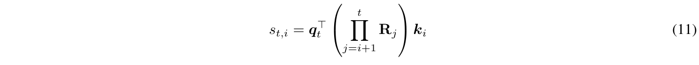
其中，第 \(t\) 个查询 \(q_t\) 与第 \(i\) 个键 \(k_i\) 的位置关系通过累计矩阵乘积体现。RoPE 将变换矩阵 \(R_j\) 定义为由 \(d_k/2\) 个二维旋转矩阵 \(R_j^k=\begin{pmatrix}\cos(j\theta_k)&-\sin(j\theta_k)\\\sin(j\theta_k)&\cos(j\theta_k)\end{pmatrix}\) 构成的块对角矩阵，每两个维度对应角频率 \(\theta_k\)。由于旋转矩阵的性质，即 \(R_{t-i}=R_t^\top R_i\)，可以将绝对位置信息 \(R_t\) 和 \(R_i\) 分别应用于 \(q_t\) 和 \(k_i\)，随后将其转换为相对位置信息 \(t-i\)，编码为 \(\prod_{j=i+1}^{t}R_j=\begin{pmatrix}\cos((t-i)\theta_k)&-\sin((t-i)\theta_k)\\\sin((t-i)\theta_k)&\cos((t-i)\theta_k)\end{pmatrix}\)。
因此，我们表明带有 gated delta rule 的线性 attention 可以表示为式 12 中的类似形式。其他 attention 变体的相似形式汇总于表 6。
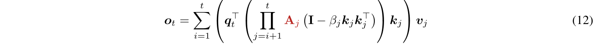
从这一视角看，GDN 可以解释为一种转移矩阵依赖数据的乘法位置编码，从而放宽 RoPE 的正交约束，并可能更强大 [115]。6 这为 RoPE 的已知外推问题提供了潜在解法：其固定频率会导致对训练期间出现的上下文长度过拟合 [108, 72]。一些近期工作采用部分 RoPE 等变通方法（接下页）
6 保持正交性时，可以分别对 \(\mathbf{q}\) 和 \(\mathbf{k}\) 应用绝对位置编码，然后在 attention 计算中自动转化为相对位置编码 [87]。
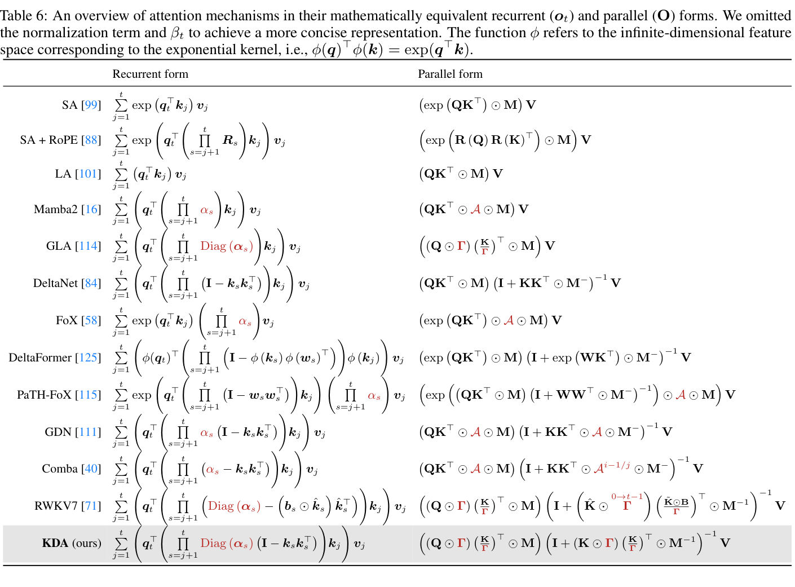
表 6：attention 机制在数学等价的循环（\(o_t\)）与并行（\(O\)）形式中的概览。为使表示更加简洁，省略归一化项和 \(\beta_t\)。函数 \(\phi\) 表示指数 kernel 对应的无限维特征空间，即 \(\phi(q)^\top\phi(k)=\exp(q^\top k)\)。
（接上页）[7]，甚至完全不使用显式位置编码（NoPE）[49, 76, 19]。鉴于 GDN 发挥与 RoPE 类似的作用，我们在模型的全局全 attention 层（MLA）中选择 NoPE，让我们提出的 KDA 模型动态捕获位置信息。
此外，RoPE 的一个关键优势是细粒度位置编码，通过为每对维度分配不同旋转频率实现，其作用类似沿特征维度的非均匀傅里叶变换 [7, 41]。但标准 GDN 使用逐头标量衰减，缺乏这种逐维度多样性，这促使我们提出带有可学习逐通道门的 KDA。
（Gated）DeltaNet 可以推广为表达力更强的对角加低秩（DPLR）结构，定义为 \(D-a_tb_t^\top\)。S4 [30] 等模型也探索了这一结构，将静态 DPLR 形式用作状态转移矩阵。计算时，通常将该矩阵联合对角化到复数平面，从而将其表达力限制为对角变换 [64]。
虽然 DPLR 结构引入更丰富的模型交互，并可能通过键值更新规则增强回忆，但它也有显著局限：计算成本高，可并行性差。这些缺点使 DPLR 在大规模或实时场景中本质上更慢，此时维持参数效率成为关键设计挑战。
为解决这一问题，KDA 引入受约束的 DPLR 变体，其中式 1 可改写为 \(S_t=(\operatorname{Diag}(\alpha_t)-\beta_tk_tk_t^\top\operatorname{Diag}(\alpha_t))S_{t-1}+\beta_tk_tv_t^\top\)，两者对应关系如下：
此外，通过共享 \(\alpha_t\)，可以像式 1 那样将其提取出来，以类似 GLA [114] 的方式对 \(S_t\) 施加细粒度乘法衰减，然后施加类似 DeltaNet [84, 112] 的 Householder 风格变换，以高效（接下页）
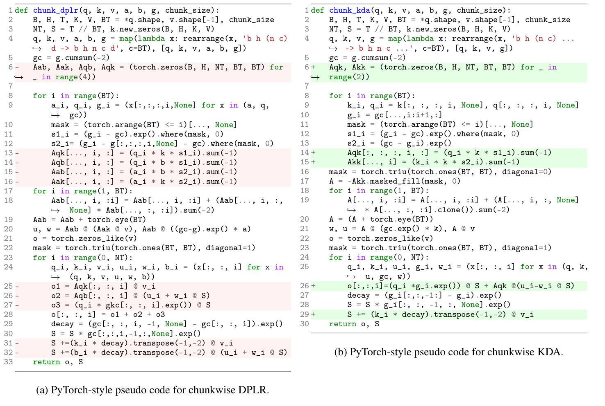
（a）分块 DPLR 的 PyTorch 风格伪代码。（b）分块 KDA 的 PyTorch 风格伪代码。
（接上页）更新状态。代码清单 8a 和 8b 并排比较 DPLR 与 KDA 的分块 PyTorch 风格伪代码实现。关键改进如下：
我们还在图 2 中测试 kernel 速度，表明对于最高 64k 的序列长度，KDA 速度接近 DPLR 的 2 倍。
训练 FLOPs。Kimi Linear 的参数量与全 attention MLA 相近。线性投影计算与全局 attention 层相同。关键区别在于 attention 计算对应的 FLOPs。为简化，我们关注非变长场景。根据 gated rule kernel 的实现，对于头维度为 \(d_h\)、固定块大小 \(C=64\) 的单个 attention 头，gated delta rule [102] 的理论 FLOPs（每个长度为 \(T\) 的序列）如下：
\[\operatorname{FLOPs}_{\mathrm{KDA}}(T;C,d_h)=6Td_h^2+3TCd_h+TC^2.\tag{13}\]
对于全（全局）attention，每个头的主导项为：
\[\operatorname{FLOPs}_{\mathrm{Attn}}(T;d_h)=2T^2d_h.\tag{14}\]
推理策略与成本。Kimi Linear 的推理策略采用混合方式，同时优化计算和 I/O 效率。在 prefill 阶段，模型使用 FLOP 密集的分块 kernel（见（接下页）
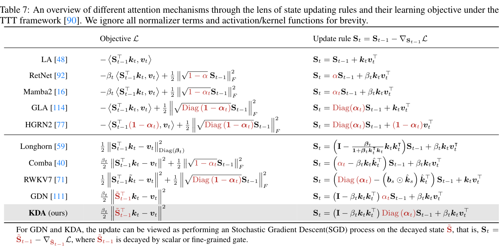
表 7：从 TTT 框架 [90] 下状态更新规则与学习目标的视角，概览不同 attention 机制。为简洁起见，忽略全部归一化项和激活／kernel 函数。对于 GDN 与 KDA，更新可以视为在衰减状态 \(\widetilde S\) 上进行随机 gradient 下降（SGD），即 \(S_t=\widetilde S_{t-1}-\nabla_{\widetilde S_{t-1}}\mathcal L\)，其中 \(\widetilde S_{t-1}\) 由标量或细粒度门衰减。
（接上页）§3.1），而在自回归生成时切换至更高效的循环 kernel（式 2）。线性 KDA 的关键优势在于，无论序列长度如何，都能保持固定大小的状态（每头 \(d_k\times d_v\)，其中 \(d_k=d_v=128\)）。对于混合模型，随着序列长度增加，受 I/O 限制的 decoding 时间相较全 attention，趋近最高 3:1 的混合效率比。图 7b 反映了这一趋势，Kimi Linear 在 1M token 上下文下实现 2.3 倍加速。此外，通过避免大规模、线性扩展的 KV cache，Kimi Linear 能将内存资源重新分配以支持更大 batch，提升整体吞吐量。在长上下文场景（最高 1M token）中，这种内存效率带来最高 6.3 倍的理论 decoding 加速（见图 1b）。
标准自 attention 机制 [99] 的二次时间复杂度，仍是基于 transformer 的模型处理长上下文的根本瓶颈。如今 LLM 被期待处理百万 token 序列，以完成 agent 工具使用和仓库级代码分析等任务 [19, 50]，使这一局限愈加关键。为克服这一挑战，大量研究探索了更高效的 attention 机制 [91, 89]，大体可分为两个主要方向：（1）线性 attention；（2）稀疏 attention。
线性 attention 将二次 attention 图重新表述为 kernel 化特征交互，以正值特征映射替代 softmax，从而通过两个具有结合性的矩阵乘积计算 attention [48]。这消除了显式的 \(O(T^2)\) 相似度矩阵，实现关于序列长度的线性时间计算。后续工作通过更精细的记忆控制显著增强原始线性 attention，从不依赖数据的“衰减”[92, 78] 转向更自适应、依赖数据的机制 [29, 93]，并将衰减粒度从粗粒度逐头 [16] 细化为精确逐通道衰减。GLA 用对角逐通道门推广这些方法，在保留分块并行性的同时平衡表达力与效率 [113, 114]。表 7 汇总相应更新规则。整体上，这些方法将 attention 表述为紧凑循环记忆，利用并行前缀扫描算子和融合矩阵乘法更新，与现代加速器良好适配 [42]。
另一互补视角将线性 attention 与快速权重记忆联系起来 [84]：状态是一张低容量联想表，通过类似 Hebbian 的规则在线更新 [69]，而慢速权重摊销何时存储、更新或遗忘的决策 [68]。
表 7 汇总现有高效 token 混合方法，从状态更新机制和优化目标两个视角比较。
从这一视角，门控与衰减充当可学习的判据，减轻干扰并稳定优化 [90]。尽管取得这些进展，在极长上下文检索中的精确复制和细粒度选择上，线性 attention 仍落后于全 attention。这促使研究者采用混合设计（交错线性与全 attention）和更结构化的更新。特别是 GDN/KDA 使用的 gated delta rule 为快速权重状态引入秩 1 修正更新，改善有针对性的保留，同时在算子层面保持可并行性 [112]。
具有门控机制的线性 attention。已知原始线性 attention [48] 缺少 softmax attention [99] 固有的选择机制，表达力不足。为解决这一问题，Gated Linear Attention 模型成为内存高效、可并行的替代方案 [113, 114, 29]。这些模型不存储不断扩大的 KV cache，而采用固定大小的矩阵值状态和可学习门，选择性保留与遗忘信息。这种设计获得与 softmax attention 相当的表达力 [65, 125, 64]，同时在推理时保持常数时间和内存复杂度。此类模型对记忆 \(S_t\in\mathbb R^{d_k\times d_v}\) 更新的一般循环形式可以写为：
\[S_t=A_tS_{t-1}+k_tv_t^\top,\qquad o_t=S_t^\top q_t.\tag{15}\]
各种 gated 线性 attention 机制的主要区别在于遗忘门 \(A_t\) 的参数化，见表 7。例如 RetNet [92] 使用不依赖数据的标量衰减 \(\alpha\)，Mamba2 [16] 使用依赖数据的标量 \(\alpha_t\)。具体来说，GLA [114] 使用对角化细粒度矩阵 \(\operatorname{Diag}(\alpha_t)\in\mathbb R^{d_k\times d_k}\)，提供有效的效率与性能折中。其他变体见表 7。
稀疏 attention。另一些工作利用标准 attention 的固有稀疏性来降低其二次复杂度，通过对策略性选取的 token 子集计算，近似完整 attention 分数。核心挑战是在不降低模型性能的情况下有效识别该子集。早期方法通常使用高效、无需训练的静态模式，例如滑动和膨胀窗口 [20, 31, 107]，或固定模式 [120, 35]，但僵硬的结构往往损害模型准确率。更先进的方法根据上下文确定重要位置，例如聚类 [51, 106] 和轻量路由机制 [25, 73, 2, 9]，但动态选择过程引入计算开销，没有专门 kernel 加速 [21] 时可能无法达到完整理论加速。另有一些模型在推理阶段引入无需训练的稀疏化 [107, 109]。
近期稀疏 attention 方法开始优先考虑硬件协同设计，NSA [119, 96] 和 MoBA [63] 就是例子，两者都从 token 级选择转向块级选择。在 NSA 中，每个查询根据 MLP 产生的分数动态选择块。其效率依赖使用大量头（通常为 16 的倍数）的 Grouped-Query Attention（GQA）[98]，这一配置专为通过高度并行的张量与矩阵乘法加速计算而设计。类似地，MoBA 进行 top-k 块选择，但利用 flash-attention kernel [17] 高效计算的 log-sum-exp（LSE）分数。与 NSA 和 MoBA 不同，近期提出的 DeepSeek-V3.2-Exp Attention（DSA）[18] 重新采用 token 级稀疏性，通过可学习的全 attention indexer 保持效率；该 indexer 使用低精度 fp8 和较小头维度进行 token 选择。
讨论。线性 attention 与稀疏 attention 是高效长上下文建模的两条不同路径。稀疏 attention 往往能更有效地检索细粒度历史信息，但代价是必须存储完整 KV cache 以选择 token，因而不如保持恒定状态的线性 attention 模型高效。此外，稀疏 attention 仅进行信息选择，其理论表达上限仍与全 attention 相同。相比之下，线性 attention 基于“压缩即智能”的原则，通过固定大小状态实现泛化，并且与 Delta 学习规则结合时，可以获得理论上更强的表达能力。虽然线性 attention 历来因检索能力弱而受到批评，但可以通过状态扩展 [23, 34, 117, 39] 或相关技术缓解此局限。然而，尽管存在这些优势，线性 attention 仍受当前硬件实现和缺乏优化推理基础设施的限制。我们的 Kimi Linear 克服这些局限，是与 vLLM 集成以高效推理的强大模型。提出的 KDA 相较全 attention 基线取得有竞争力的表现（表 3），并在百万 token 上下文中实现超过 2 倍 decoding 加速（图 7b）。尽管实现高效长上下文建模的途径不同，线性 attention 与稀疏 attention 并不互斥。未来工作可探索整合两者优势的混合模型，将线性 attention 的压缩与泛化能力和稀疏 attention 的细粒度检索优势结合，进一步增强模型性能与效率。
尽管高效，纯线性 attention 在精确记忆检索与精确复制上仍有困难 [45, 104]。这种不足阻碍其被工业规模 LLM 采用，而这些模型要求稳健的长上下文回忆（例如超过 1M token）和在庞大代码仓库上的可靠工具使用 [50]。近期研究表明，线性 attention 与全 attention 可以有效互补，带来各种混合设计。
层内混合。一类混合架构是层内混合，在每层内自适应融合不同机制的输出。常见实现融合每层内异构头的输出，例如结合标准 attention 与状态空间模型（SSM）[22, 56]。相比之下，序列级方法对输入的不同部分应用不同机制。例如，一些方法对过去上下文使用线性 attention，对近期 token 使用 SWA [123, 54, 67]；NHA [24] 则用 GSA [124] 压缩历史，并结合局部滑动窗口上下文，模拟标准 attention 操作。
层间混合。层内混合的关键缺点是增加系统复杂度与推理开销。异构机制需要独立计算路径，使分布式并行等优化复杂化。为缓解这一挑战，层间混合成为 LLM 中更广泛采用、更实用的策略 [66, 57, 97]。这种方法按预定比例堆叠不同层类型，例如全 attention 与线性替代层。基于这一范式，我们实现简单而有效的策略：按固定 3:1 比例交错线性与全 attention 层（消融见 §5.2）。这种规则重复结构简化 KV cache 管理，并与标准优化无缝集成。对于混合模型的线性组件，我们没有采用常见的 Mamba2 [16]，而使用 KDA，因为发现其整体性能更优，特别是在检索与复制能力上。
讨论。近期工作指出，混合模型可能对 RoPE 基频调整敏感，这种脆弱性使上下文窗口扩展复杂化 [126]，并可能阻碍模型外推至更长序列。为解决此问题，近期模型趋向采用无位置 embeddings（NoPE）方案。例如，Falcon-H [126] 使用非常高的基频（例如 \(b\approx10^{11}\)），将位置编码推向近似 NoPE 的状态。在架构上，SwanGPT [76] 交错基于 RoPE 的层和基于 NoPE 的全 attention 层。与这一方向一致，我们发现，将 KDA 层与 NoPE 全 attention 混合也是非常有效的策略，有助于直接扩展上下文窗口。
我们介绍 Kimi Linear，一种混合线性 attention 架构，旨在满足 agent 智能与 test-time scaling 的效率需求，同时不牺牲质量。Kimi Linear 的核心是 Kimi Delta Attention（KDA），一个具有逐通道门控机制的先进线性 attention 模块，增强记忆控制，并使 RNN 风格模型能够用于混合架构。将 KDA 与全局 attention 按 3:1 比例交错，Kimi Linear 最多减少 75% 的内存用量，同时实现最高 6.3 倍 decoding 吞吐量，并超越全 attention 基线。我们的方法为 LLM 提供可扩展、高效的方案，开源 KDA kernel 与预训练 checkpoint 有助于进一步研究。
[1] Sandhini Agarwal 等 《gpt-oss-120b 与 gpt-oss-20b 模型卡》. 载于： arXiv 预印本 arXiv:2508.10925 (2025).
[2] Joshua Ainslie 等 《Colt5：通过条件计算实现更快的长距离 transformer》. 载于： arXiv 预印本 arXiv:2303.09752 (2023).
[3] Zeyuan Allen-Zhu. 《语言模型的物理学：第 4.1 部分，架构设计与 Canon 层的魔力》.载于： SSRN Electronic Journal (May 2025). SSRN 地址： https://ssrn.com/abstract=5240330 或 http://dx.doi.org/10.2139/ssrn.5240330. DOI: 10.2139/ssrn.5240330.
[4] Simran Arora 等 《简单线性 attention 语言模型平衡回忆与吞吐量之间的折中》. 载于：Forty-first International Conference on Machine Learning. 2024. URL: https://openreview.net/forum?id=e93ffDcpH3.
[5] Simran Arora 等 《Zoology：衡量并改善高效语言模型的回忆能力》. 2023. arXiv:2312.04927 [cs.CL].
[6] Yushi Bai 等 《LongBench v2：面向真实长上下文多任务的更深入理解与推理》. 载于： arXiv 预印本 arXiv:2412.15204 (2024).
[7] Federico Barbero 等 《转了一圈又一圈！是什么让旋转位置编码有用？》 载于：Proceedings of ICLR. 2025. URL: https://openreview.net/forum?id=GtvuNrk58a.
[8] Ali Behrouz 等 《Atlas：学习在测试时最优地记忆上下文》. 载于： arXiv 预印本 arXiv:2505.23735 (2025).
[9] Amanda Bertsch 等 《Unlimiformer：具有无限长度输入的长距离 transformer》. 载于： Advances in NeurIPS 36 (2023), 页 35522–35543.
[10] Stella Biderman 等 《来自一线的语言模型可复现评测经验》. 载于： arXiv 预印本 arXiv:2405.14782 (2024).
[11] Christian Bischof 与 Charles Van Loan. 《Householder 矩阵乘积的 WY 表示》. 载于：SIAM Journal on Scientific 与 Statistical Computing (1987), s2–s13. URL: https://doi.org/10.1137/0908009.
[12] Aaron Blakeman 等 《Nemotron-H：准确且高效的混合 mamba-transformer 模型家族》. 载于：arXiv 预印本 arXiv:2504.03624 (2025).
[13] Egor Bogomolov 等 《Long Code Arena：一组长上下文代码模型基准》. 载于： arXiv 预印本 arXiv:2406.11612 (2024).
[14] Peter Clark 等 《以为你解决了问答？试试 ARC，AI2 推理挑战》. 载于：arXiv:1803.05457v1 (2018).
[15] Ganqu Cui 等 《推理语言模型强化学习中的熵机制》. 载于： arXiv 预印本 arXiv:2505.22617 (2025).
[16] Tri Dao 与 Albert Gu. 《Transformer 是 SSM：通过结构化状态空间对偶实现广义模型与高效算法》. 载于： CoRR abs/2405.21060 (2024). DOI: 10.48550/ARXIV.2405.21060.arXiv: 2405.21060. URL: https://doi.org/10.48550/arXiv.2405.21060.
[17] Tri Dao 等 《FlashAttention：具备 IO 感知的快速、内存高效的精确 attention》. 载于： Advances in NeurIPS. 2022, 页 16344–16359. URL: https://proceedings.neurips.cc/paper_files/paper/2022/file/67d57c32e20fd0a7a302cb81d36e40d5-Paper-Conference.pdf.
[18] DeepSeek-AI. 《DeepSeek-V3.2-Exp：用 DeepSeek Sparse Attention 提升长上下文效率》. 2025.
[19] DeepSeek-AI 等 《DeepSeek-V3 技术报告》. 2025. arXiv: 2412.19437 [cs.CL]. URL: https://arxiv.org/abs/2412.19437.
[20] Jiayu Ding 等 《LongNet：将 transformer 扩展至 1,000,000,000 token》. 2023. arXiv: 2307.02486 [cs.CL].URL: https://arxiv.org/abs/2307.02486.
[21] Juechu Dong 等 《Flex Attention：生成优化 attention kernel 的编程模型》. 2024.arXiv: 2412.05496 [cs.LG]. URL: https://arxiv.org/abs/2412.05496.
[22] Xin Dong 等 《Hymba：用于小型语言模型的混合头架构》. 2024. arXiv: 2411.13676 [cs.CL]. URL: https://arxiv.org/abs/2411.13676.
[23] Jusen Du 等 《MoM：通过记忆混合实现线性序列建模》. 载于： arXiv 预印本 arXiv:2502.13685 (2025).
[24] Jusen Du 等 《用于高效序列建模的原生混合 attention》. 载于： arXiv 预印本 arXiv:2510.07019 (2025).
[25] Tianyu Fu 等 《MoA：通过稀疏 attention 混合实现大语言模型自动压缩》. 载于： arXiv 预印本 arXiv:2406.14909 (2024).
[26] Aryo Pradipta Gema 等 《我们已经完成 MMLU 了吗？》 载于： arXiv 预印本 arXiv:2406.04127 (2024).
[27] Riccardo Grazzi 等 《通过负特征值解锁线性 RNN 的状态跟踪能力》. 载于： Proceedings of ICLR. 2025. URL: https://openreview.net/forum?id=UvTo3tVBk2.
[28] Joseph F. Grcar. 《普通消元如何成为高斯消元》. 载于： Historia Mathematica 38.2 (May 2011), 页 163–218. ISSN: 0315-0860. DOI: 10.1016/j.hm.2010.06.003. URL: http://dx.doi.org/10.1016/j.hm.2010.06.003.
[29] Albert Gu 与 Tri Dao. 《Mamba：采用选择性状态空间的线性时间序列建模》. 2023. arXiv:2312.00752 [cs.LG].
[30] Albert Gu, Karan Goel, 与 Christopher Ré. 《通过结构化状态空间高效建模长序列》.2022. arXiv: 2111.00396 [cs.LG].
[31] Xiangming Gu 等 《语言模型中的 attention sink 何时出现：实证视角》. 2025. arXiv:2410.10781 [cs.CL]. URL: https://arxiv.org/abs/2410.10781.
[32] Yuxian Gu 等 《Jet-Nemotron：采用后置神经架构搜索的高效语言模型》. 2025. arXiv:2508.15884 [cs.CL]. URL: https://arxiv.org/abs/2508.15884.
[33] Daya Guo 等 《DeepSeek-R1 通过强化学习激励 LLM 的推理》. 载于： Nature 645.8081 (2025), 页 633–638.
[34] Han Guo 等 《对数线性 attention》. 载于： arXiv 预印本 arXiv:2506.04761 (2025).
[35] Qipeng Guo 等 《Star-transformer》. 载于： arXiv 预印本 arXiv:1902.09113 (2019).
[36] Dan Hendrycks 等 《衡量大规模多任务语言理解》. 2021. arXiv: 2009.03300 [cs.CY]. URL: https://arxiv.org/abs/2009.03300.
[37] Jordan Hoffmann 等 《训练计算最优的大语言模型》. 2022. arXiv: 2203.15556 [cs.CL]. URL: https://arxiv.org/abs/2203.15556.
[38] Cheng-Ping Hsieh 等 《RULER：你的长上下文语言模型真实上下文大小是多少？》 载于：arXiv 预印本 arXiv:2404.06654 (2024).
[39] Jiaxi Hu 等 《用于长期时间序列预测的吸引子记忆：混沌视角》. 载于： Advances in NeurIPS 37 (2024), 页 20786–20818.
[40] Jiaxi Hu 等 《Comba：通过闭环控制改进非线性 RNN》. 载于： arXiv 预印本 arXiv:2506.02475 (2025).
[41] Ermo Hua 等 《傅里叶位置 embedding：增强 attention 的周期扩展以实现长度泛化》. 载于： arXiv 预印本 arXiv:2412.17739 (2024).
[42] Weizhe Hua 等 《在线性时间内达到 transformer 质量》. 载于： Proceedings of ICML. 编辑： Kamalika Chaudhuri 等 PMLR, 2022, 页 9099–9117. URL: https://proceedings.mlr.press/v162/hua22a.html.
[43] Yuzhen Huang 等 《C-Eval：面向基础模型的多层次多学科中文评测套件》. 载于：Advances in NeurIPS 36 (2023), 页 62991–63010.
[44] Naman Jain 等 《LiveCodeBench：全面且无污染的大语言模型代码评测》. 载于： arXiv 预印本 arXiv:2403.07974 (2024).
[45] Samy Jelassi 等 《跟我重复：Transformer 比状态空间模型更擅长复制》. 2024. arXiv:2402.01032 [cs.LG].
[46] Thierry Joffrain 等 《重新审视 Householder 变换的累积》. 载于： (2006), 页 169–179. URL:https://doi.org/10.1145/1141885.1141886.
[47] Mandar Joshi 等 《TriviaQA：用于阅读理解的大规模远程监督挑战数据集》.载于： arXiv 预印本 arXiv:1705.03551 (2017).
[48] Angelos Katharopoulos 等 《Transformer 是 RNN：采用线性 attention 的快速自回归 transformer》. 载于： Proceedings of ICML. 编辑： Hal Daumé III 与 Aarti Singh. PMLR, 2020, 页 5156–5165. URL:https://proceedings.mlr.press/v119/katharopoulos20a.html.
[49] Amirhossein Kazemnejad 等 《位置编码对 transformer 长度泛化的影响》.载于： Advances in NeurIPS 36 (2023), 页 24892–24928.
[50] Team Kimi 等 《Kimi K2：开放的 agent 智能》. 载于： arXiv 预印本 arXiv:2507.20534 (2025).
[51] Nikita Kitaev, Łukasz Kaiser, 与 Anselm Levskaya. 《Reformer：高效的 transformer》. 载于： arXiv 预印本 arXiv:2001.04451 (2020).
[52] Satyapriya Krishna 等 《事实、检索与推理：检索增强生成的统一评测》. 载于：arXiv 预印本 arXiv:2409.12941 (2024).
[53] Hanyu Lai 等 《大语言模型后训练扩展综述》. 载于： Proceedings of the 63rd Annual Meeting of the Association for Computational Linguistics (Volume 1: Long Papers). 2025, 页 2771– 2791.
[54] Disen Lan 等 《Liger：将大语言模型线性化为门控循环结构》. 载于： arXiv 预印本 arXiv:2503.01496 (2025).
[55] Haonan Li 等 《CMMLU：衡量中文大规模多任务语言理解》. 载于： Findings of the Association for Computational Linguistics: ACL 2024. 编辑： Lun-Wei Ku, Andre Martins, 与 Vivek Srikumar. Bangkok, Thailand: Association for Computational Linguistics, Aug. 2024, 页 11260–11285. DOI:10.18653/v1/2024.findings-acl.671. URL: https://aclanthology.org/2024.findingsacl.671/.
[56] Yixing Li 等 《Transmamba：在 transformer 与 mamba 之间灵活切换》. 载于： arXiv 预印本 arXiv:2503.24067 (2025).
[57] Opher Lieber 等 《Jamba：混合 Transformer-Mamba 语言模型》. 2024. arXiv: 2403.19887 [cs.CL].
[58] Zhixuan Lin 等 《Forgetting Transformer：带遗忘门的 softmax attention》. 载于： arXiv 预印本 arXiv:2503.02130 (2025).
[59] Bo Liu 等 《Longhorn：状态空间模型是摊销的在线学习器》. 载于： ArXiv abs/2407.14207 (2024).URL: https://api.semanticscholar.org/CorpusID:271310065.
[60] Jiawei Liu 等 《ChatGPT 生成的代码真的正确吗？严格评测大语言模型的代码生成》. 载于： Thirty-seventh Conference on NeurIPS. 2023. URL: https://openreview.net/forum?id=1qvx610Cu7.
[61] Jiawei Liu 等 《RepoQA：评测长上下文代码理解》. 载于： arXiv 预印本 arXiv:2406.06025 (2024).
[62] Jingyuan Liu 等 《Muon 可扩展用于 LLM 训练》. 2025. arXiv: 2502.16982 [cs.LG]. URL: https://arxiv.org/abs/2502.16982.
[63] Enzhe Lu 等 《MoBA：面向长上下文 LLM 的块 attention 混合》. 2025. arXiv: 2502.13189 [cs.LG].URL: https://arxiv.org/abs/2502.13189.
[64] William Merrill, Jackson Petty, 与 Ashish Sabharwal. 《状态空间模型中的状态幻觉》. 载于： arXiv 预印本 arXiv:2404.08819 (2024).
[65] William Merrill 与 Ashish Sabharwal. 《并行性折中：对数精度 transformer 的局限》.载于： Transactions of the Association for Computational Linguistics 11 (2023), 页 531–545. DOI: 10.1162/tacl_a_00562. URL: https://aclanthology.org/2023.tacl-1.31/.
[66] MiniMax 等 《MiniMax-01：通过 Lightning Attention 扩展基础模型》. 2025. arXiv: 2501.08313 [cs.CL].
[67] Tsendsuren Munkhdalai, Manaal Faruqui, 与 Siddharth Gopal. 《不遗漏任何上下文：采用 Infini-attention 的高效无限上下文 transformer》. 2024. arXiv: 2404.07143 [cs.CL].
[68] Tsendsuren Munkhdalai 与 Adam Trischler. 《使用 Hebbian 快速权重进行元学习》. 2018. arXiv: 1807.05076 [cs.NE]. URL: https://arxiv.org/abs/1807.05076.
[69] Tsendsuren Munkhdalai 等 《元学习的神经记忆》. 载于： ArXiv abs/1907.09720 (2019). URL: https://api.semanticscholar.org/CorpusID:198179407.
[70] Long Ouyang 等 《利用人类反馈训练语言模型遵循指令》. 载于： Advances in NeurIPS 35 (2022), 页 27730–27744.
[71] Bo Peng 等 《RWKV-7 “Goose”：表达力强的动态状态演化》. 2025. arXiv: 2503.14456 [cs.CL].
[72] Bowen Peng 等 《YaRN：大语言模型的高效上下文窗口扩展》. 载于： arXiv 预印本 arXiv:2309.00071 (2023).
[73] Piotr Piękos, Róbert Csordás, 与 Jürgen Schmidhuber. 《稀疏 attention 混合：通过专家选择路由实现基于内容的可学习稀疏 attention》. 载于： arXiv 预印本 arXiv:2505.00315 (2025).
[74] Aske Plaat 等 《大语言模型推理综述》. 载于： CoRR (2024).
[75] Ofir Press, Noah Smith, 与 Mike Lewis. 《短训练、长测试：具有线性偏置的 attention 实现输入长度外推》. 载于： Proceedings of ICLR. 2022. URL: https://openreview.net/forum?id=R8sQPpGCv0.
[76] Krishna C. Puvvada 等 《SWAN-GPT：高效且可扩展的长上下文语言建模方法》. 2025. arXiv: 2504.08719 [cs.CL].
[77] Zhen Qin 等 《HGRN2：具有状态扩展的 gated 线性 RNN》. 2024. arXiv: 2404.07904 [cs.CL].
[78] Zhen Qin 等 《TransNormerLLM：通过改进 TransNormer 实现更快、更好的大语言模型》.2024. arXiv: 2307.14995 [cs.CL].
[79] Zihan Qiu 等 《大语言模型的 gated attention：非线性、稀疏性与无 attention sink》.2025. arXiv: 2505.06708 [cs.CL].
[80] Xiaoye Qu 等 《大型推理模型高效推理综述：语言、多模态及其他方向》. 载于： arXiv 预印本 arXiv:2503.21614 (2025).
[81] Qwen Team. 《Qwen3-Next：迈向极致训练与推理效率》. 访问日期： 2025-10-27. Sept.2025.
[82] David Rein 等 《GPQA：研究生级、无法靠 Google 搜索解决的问答基准》. 载于： First Conference on Language Modeling. 2024.
[83] Keisuke Sakaguchi 等 《WinoGrande：大规模对抗式 Winograd Schema 挑战》. 2019. arXiv:1907.10641 [cs.CL]. URL: https://arxiv.org/abs/1907.10641.
[84] Imanol Schlag, Kazuki Irie, 与 Jürgen Schmidhuber. 《线性 transformer 实际上是快速权重编程器》. 载于： Proceedings of ICML. 编辑： Marina Meila 与 Tong Zhang. PMLR, 2021, 页 9355–9366. URL:https://proceedings.mlr.press/v139/schlag21a.html.
[85] Imanol Schlag, Tsendsuren Munkhdalai, 与 Jürgen Schmidhuber. 《使用快速权重记忆学习联想推理》. 2021. arXiv: 2011.07831 [cs.LG]. URL: https://arxiv.org/abs/2011.07831.
[86] Peter Shaw, Jakob Uszkoreit, 与 Ashish Vaswani. 《具有相对位置表示的自 attention》. 2018.arXiv: 1803.02155 [cs.CL].
[87] Jianlin Su. 《线性 attention：模仿、创新与反馈简史》. June 2025. URL: https://kexue.fm/archives/11033.
[88] Jianlin Su 等 《RoFormer：采用旋转位置 embedding 的增强 transformer》. 载于： Neurocomputing 568 (2024), p. 127063.
[89] Weigao Sun 等 《速度总是赢家：大语言模型高效架构综述》. 2025.arXiv: 2508.09834 [cs.CL]. URL: https://arxiv.org/abs/2508.09834.
[90] Yu Sun 等 《学习（在测试时学习）：具有表达力强的隐藏状态的 RNN》. 载于： ArXiv abs/2407.04620 (2024). URL: https://api.semanticscholar.org/CorpusID:271039606.
[91] Yutao Sun 等 《大语言模型的高效 attention 机制综述》. 载于： arXiv 预印本 arXiv:2507.19595 (2025).
[92] Yutao Sun 等 《Retentive Network：大语言模型中 transformer 的继任者》. 2023. arXiv:2307.08621 [cs.CL].
[93] Yutao Sun 等 《只缓存一次：语言模型的 Decoder-Decoder 架构》. 2024. arXiv:2405.05254 [cs.CL]. URL: https://arxiv.org/abs/2405.05254.
[94] Mirac Suzgun 等 《具有挑战性的 BIG-Bench 任务，以及 chain-of-thought 能否解决它们》. 载于： arXiv 预印本 arXiv:2210.09261 (2022).
[95] Kimi Team 等 《Kimi k1.5：使用 LLM 扩展强化学习》. 2025. arXiv: 2501.12599 [cs.AI].URL: https://arxiv.org/abs/2501.12599.
[96] MiniCPM Team 等 《MiniCPM4：终端设备上的超高效 LLM》. 2025. arXiv: 2506.07900 [cs.CL].URL: https://arxiv.org/abs/2506.07900.
[97] Tencent Hunyuan Team 等 《Hunyuan-TurboS：通过 mamba-transformer 协同与自适应 chain-of-thought 推进大语言模型》. 载于： arXiv 预印本 arXiv:2505.15431 (2025).
[98] Hugo Touvron 等 《LLaMA：开放且高效的基础语言模型》. 2023. arXiv: 2302.13971 [cs.CL].
[99] Ashish Vaswani 等 《Attention 就足够了》. 载于： Advances in NeurIPS. 编辑： I. Guyon 等 Curran Associates, Inc., 2017. URL: https://proceedings.neurips.cc/paper_files/paper/2017/file/3f5ee243547dee91fbd053c1c4a845aa-Paper.pdf.
[100] Roger Waleffe 等 《基于 Mamba 的语言模型实证研究》. 2024. arXiv: 2406.07887 [cs.LG]. URL: https://arxiv.org/abs/2406.07887.
[101] Sinong Wang 等 《Linformer：具有线性复杂度的自 attention》. 2020. arXiv: 2006.04768 [cs.LG].
[102] Yaoyu Wang. 《从推理框架视角理解 DeltaNet》. May 2025. URL: https://yywangcs.notion.site/DeltaNet-1fefc9f5d80580a496f8eb406a496f09.
[103] Yubo Wang 等 《MMLU-Pro：更稳健且更具挑战性的多任务语言理解基准》.载于： Advances in NeurIPS 37 (2024), 页 95266–95290.
[104] Kaiyue Wen, Xingyu Dang, 与 Kaifeng Lyu. 《RNN（还）不是 transformer：上下文内检索的关键瓶颈》. 载于： arXiv 预印本 arXiv:2402.18510 (2024).
[105] Colin White 等 《LiveBench：具有挑战性、无污染的 LLM 基准》. 载于： arXiv 预印本 arXiv:2406.19314 4 (2024).
[106] Yuhuai Wu 等 《具有记忆的 transformer》. 载于： arXiv 预印本 arXiv:2203.08913 (2022).
[107] Guangxuan Xiao 等 《采用 attention sink 的高效流式语言模型》. 载于： arXiv 预印本 arXiv:2309.17453 (2023).
[108] Wenhan Xiong 等 《基础模型的有效长上下文扩展》. 2023. arXiv: 2309.16039 [cs.CL].URL: https://arxiv.org/abs/2309.16039.
[109] Ruyi Xu 等 《XAttention：采用反对角线评分的块稀疏 attention》. 载于： arXiv 预印本 arXiv:2503.16428 (2025).
[110] Bowen Yang 等 《从 RoPE 到 NoPE 再返回：一种新的混合 attention 策略》. 2025. arXiv: 2501.18795 [cs.CL]. URL: https://arxiv.org/abs/2501.18795.
[111] Songlin Yang, Jan Kautz, 与 Ali Hatamizadeh. 《Gated Delta Networks：用 Delta Rule 改进 Mamba2》.载于： Proceedings of ICLR. 2025. URL: https://openreview.net/forum?id=r8H7xhYPwz.
[112] Songlin Yang 与 Bailin Wang. 《沿序列长度并行化带 delta rule 的线性 transformer》.载于： ArXiv abs/2406.06484 (2024). URL: https://api.semanticscholar.org/CorpusID:270371554.
[113] Songlin Yang 与 Yu Zhang. 《FLA：基于 Triton 的线性 attention 机制硬件高效实现库》. 2024. URL: https://github.com/fla-org/flash-linear-attention.
[114] Songlin Yang 等 《具有硬件高效训练的 Gated Linear Attention Transformer》. 载于： Proceedings of ICML. PMLR, 2024.
[115] Songlin Yang 等 《PaTH Attention：通过累积 Householder 变换实现位置编码》. 载于：arXiv 预印本 arXiv:2505.16381 (2025).
[116] Feng Yao 等 《你的高效 RL 框架暗中带来 off-policy RL 训练》. Aug. 2025. URL:https://fengyao.notion.site/off-policy-rl.
[117] Morris Yau 等 《前缀可扫描模型中的顺序与并行对偶》. 载于： arXiv 预印本 arXiv:2506.10918 (2025).
[118] Howard Yen 等 《HELMET：如何有效且全面地评测长上下文语言模型》.载于： International Conference on Learning Representations (ICLR). 2025.
[119] Jingyang Yuan 等 《原生稀疏 attention：与硬件适配且原生可训练的稀疏 attention》. 2025.arXiv: 2502.11089 [cs.CL]. URL: https://arxiv.org/abs/2502.11089.
[120] Manzil Zaheer 等 《Big Bird：面向更长序列的 transformer》. 载于： Advances in NeurIPS 33 (2020), 页 17283–17297.
[121] Rowan Zellers 等 《HellaSwag：机器真的能完成你的句子吗？》 载于： Proceedings of the 57th Annual Meeting of the Association for Computational Linguistics. 2019.
[122] Biao Zhang 与 Rico Sennrich. 《均方根层归一化》. 载于： Advances in NeurIPS 32 (2019).
[123] Michael Zhang 等 《LoLCATs：大语言模型的低秩线性化》. 载于： arXiv 预印本 arXiv:2410.10254 (2024).
[124] Yu Zhang 等 《用于高效线性时间序列建模的 Gated Slot Attention》. 2024. arXiv: 2409.07146 [cs.CL].
[125] Shu Zhong 等 《从联想记忆视角理解 Transformer》. 载于： arXiv 预印本 arXiv:2505.19488 (2025).
[126] Jingwei Zuo 等 《Falcon-H1：重新定义效率与性能的混合头语言模型家族》. 2025. arXiv: 2507.22448 [cs.CL]. URL: https://arxiv.org/abs/2507.22448.
作者按贡献重要程度排序，担任项目领导角色的作者列在最后。项目在 Moonshot AI 开发，若干外部合作者以 # 标记。带星号（*）的人名表示已不在团队中的人员。
Yu Zhang1
Zongyu Lin*
Xingcheng Yao
Jiaxi Hu2
Fanqing Meng
Chengyin Liu
Xin Men
Songlin Yang#3
Zhiyuan Li
Wentao Li
Enzhe Lu
Weizhou Liu
Yanru Chen
Weixin Xu
Longhui Yu
Yejie Wang
Yu Fan
Longguang Zhong
Enming Yuan
Dehao Zhang
Yizhi Zhang
T.Y. Liu
Haiming Wang
Shengjun Fang
Weiran He
Shaowei Liu
Yiwei Li
Jianlin Su
Jiezhong Qiu4
Bo Pang
Junjie Yan
Zhejun Jiang
Weixiao Huang
Bohong Yin
Jiacheng You
Chu Wei
Zhengtao Wang
Chao Hong
Yutian Chen
Guanduo Chen
Yucheng Wang
Huabin Zheng
Feng Wang
Yibo Liu
Mengnan Dong
Zheng Zhang
Siyuan Pan
Wenhao Wu
Yuhao Wu
Longyu Guan
Jiawen Tao
Guohong Fu#1
Xinran Xu
Yuzhi Wang
Guokun Lai
Yuxin Wu
Xinyu Zhou
Zhilin Yang
Yulun Du
1 中国，苏州大学
2 香港科技大学（广州）
3 麻省理工学院
4 中国科学院杭州医学研究所
首先回顾 KDA 的循环形式：
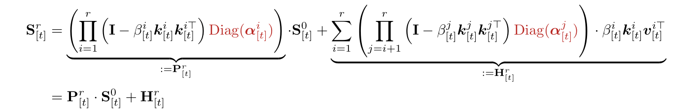
我们的目标是将 \(P^r_{[t]}\) 和 \(H^r_{[t]}\) 转换为适合并行计算的矩阵形式。
我们表明，涉及广义 Householder 矩阵累计乘积的 \(P^r_{[t]}\)，可以使用经典 WY 表示优化。
命题 1。矩阵 \(P^r_{[t]}\) 可以表示为：
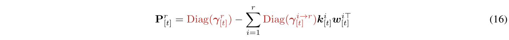
其中，辅助向量 \(w^r_{[t]}\in\mathbb R^{d_k}\) 通过以下递推关系计算：
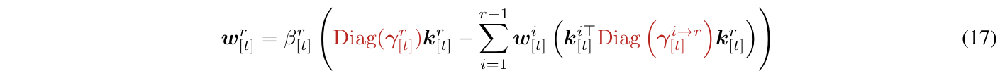
证明。使用数学归纳法证明。
归纳步骤：假设命题对 \(r-1\) 成立，即 \(P^{r-1}_{[t]}=\operatorname{Diag}(\gamma^{r-1}_{[t]})-\sum_{i=1}^{r-1}\operatorname{Diag}(\gamma^{i\to r-1}_{[t]})k^i_{[t]}w^{i\top}_{[t]}\)。现在推导：
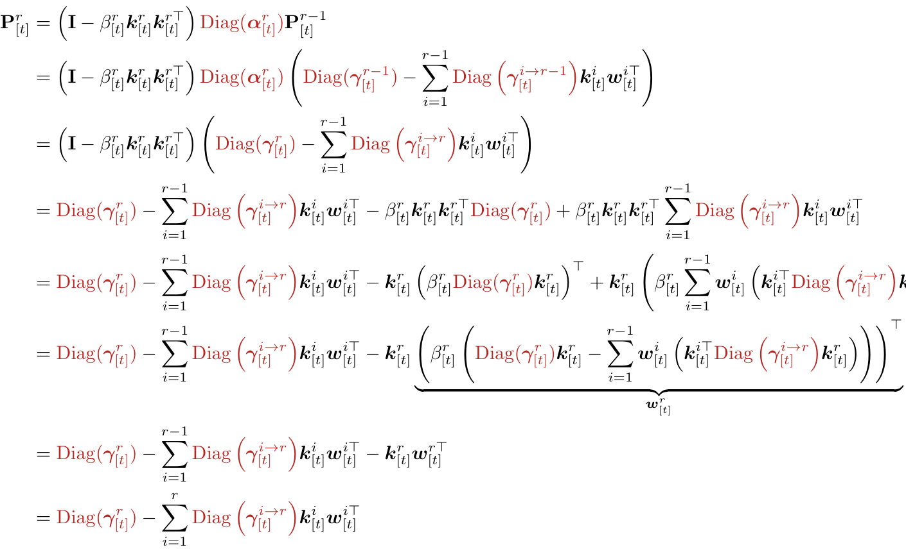
归纳步骤成立。■
类似 \(P^r_{[t]}\)，\(H^r_{[t]}\) 也可以表示为可并行的形式。
命题 2。矩阵 \(H^r_{[t]}\) 可以表示为：
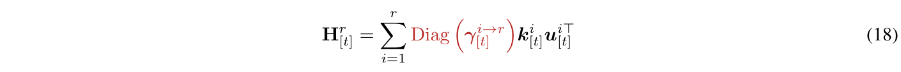
其中，辅助向量 \(u^r_{[t]}\in\mathbb R^{d_v}\) 通过以下递推关系计算：
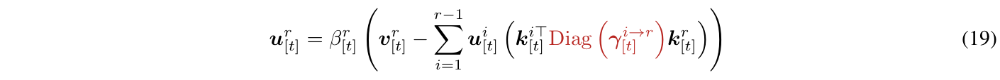
证明。再次使用数学归纳法。
归纳步骤：假设命题对 \(r-1\) 成立。
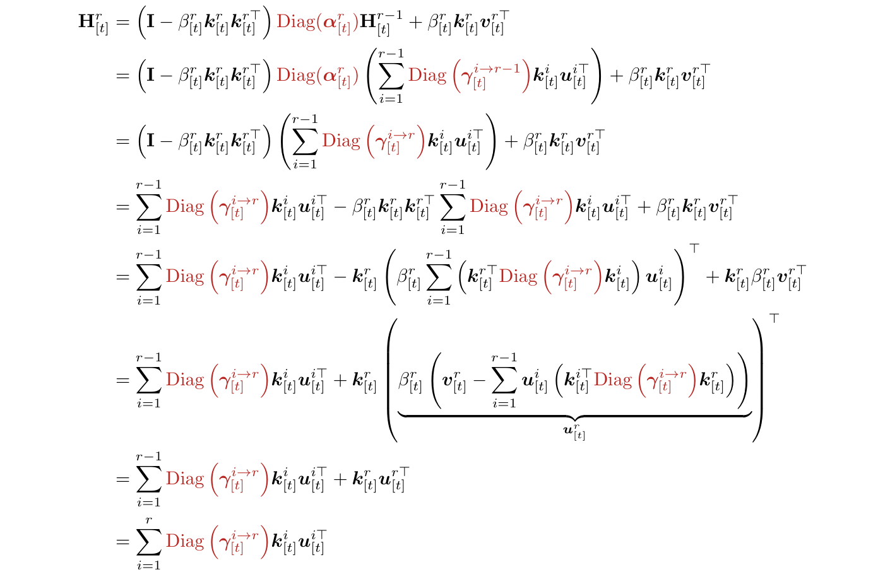
归纳步骤成立。■
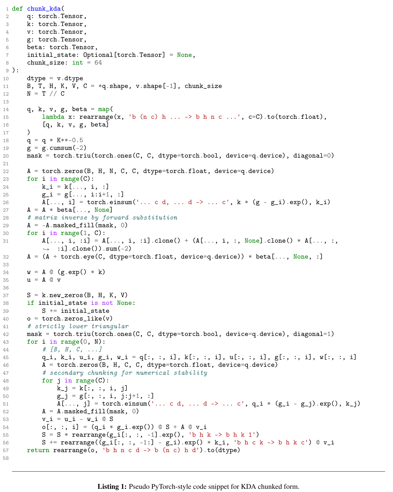
代码清单 1：KDA 分块形式的 PyTorch 风格伪代码片段。
代码注释翻译：第 28 行，通过前向替代求矩阵逆；第 41 行，严格下三角；第 44 行，形状 [B, H, C, ...]；第 47 行，为保证数值稳定性而进行二级分块。
遵循 Moonlight，我们还使用扩展的 5.7T token 数据集训练 Kimi Linear，以证明其有效性。借助 3 倍稀疏性与新的 attention 架构设计，Kimi Linear 在几乎所有基准上始终超越 Moonlight，突出体现新架构的有效性。基础模型的结果见表 8，指令微调模型的结果见表 9。对于超出其 8K 上下文限制的任务，Moonlight-Instruct 未进行评测（“-”）。
Kimi Linear@5.7T 在 1M 上下文长度的 RULER 上取得 94.8 分。这一长上下文表现进一步说明，Kimi Linear 是全 attention 架构的有前景替代方案，在取得相当或更优结果的同时，可能提供更高效的资源利用。
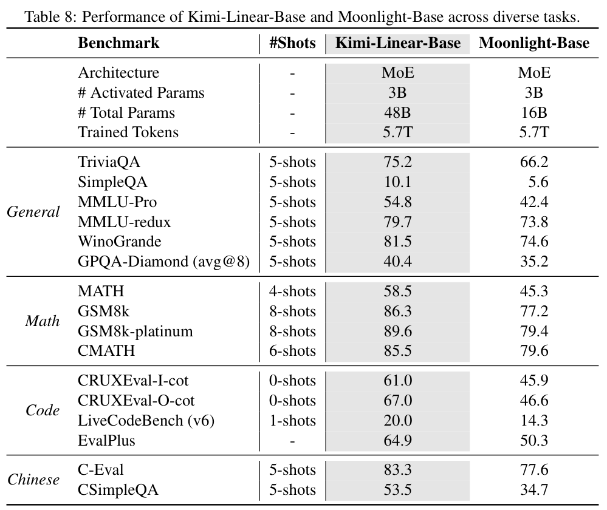
表 8：Kimi-Linear-Base 和 Moonlight-Base 在不同任务上的性能。
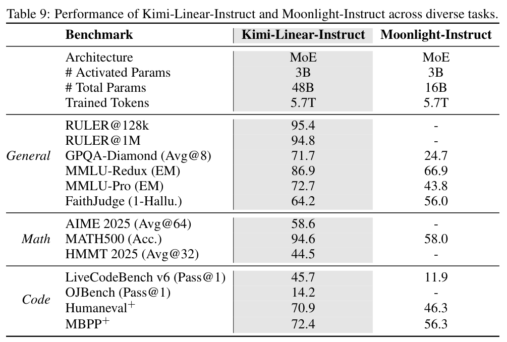
表 9：Kimi-Linear-Instruct 和 Moonlight-Instruct 在不同任务上的性能。